AI 每日新聞彙整
全部主題
其他
5 家媒體報導ipoanthropiccharge
Who’s really in charge at Anthropic after the IPO?
Here's a clear explanation of Anthropic's incredibly complex governance structure.
- TechCrunch AI Who’s really in charge at Anthropic after the IPO?
- Ars Technica AI Anthropic IPO warns its AI could blackmail people, become sentient, end humanity
- Wired AI Anthropic Says It Will Revolutionize Biology—Some Day
- The Verge AI Anthropic’s elaborate plan to keep Wall Street at bay
- 科技新報 TechNews Anthropic 提交 IPO 重振市場信心，日韓股市領漲亞股
4 家媒體報導genieworldmodel
Google’s Genie 4 world model adds audio, more realistic worlds, and real-time steering
Genie 4 can maintain a consistent scene for up to two minutes, double Genie 3's limit, and offers better physics and more humanlike characters.
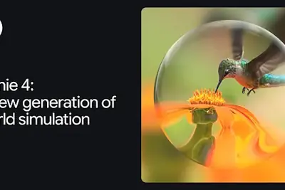
- TechCrunch AI Google’s Genie 4 world model adds audio, more realistic worlds, and real-time steering
- Google DeepMind Genie 4: A new generation of world simulation
- Ars Technica AI DeepMind unveils Genie 4 world model promising more realistic physics and humans
- The Verge AI Google’s next Genie AI model generates more realistic experiences
3 家媒體報導807anthropic163
Anthropic 向 SEC 公開遞交申請，擬以代碼 ANT 登陸 Nasdaq，上半年營收 163 億美元
Anthropic 10 月 26 日向美國證券交易委員會（SEC）公開遞交 S-1，計畫以代碼 ANT 在 Nasdaq 上市。依媒體整理的文件內容，2026 年上半年營收 163 億美元，淨損 807 億美元，多數來自會計認列。股數與價格區間尚未公布。
2 家媒體報導anthropicsec
Anthropic上市文件聚焦中國AI競爭 模型蒸餾、晶片管制成角力焦點
美國AI新創Anthropic向美國證券交易委員會（SEC）正式提交上市申請文件，其中也將中國AI業者帶來的競爭壓力、模型蒸餾及跨境技術管制列為營運風險。<br /...
- DIGITIMES Anthropic上市文件聚焦中國AI競爭 模型蒸餾、晶片管制成角力焦點
- iThome Anthropic正式啟動IPO，揭露AI業務高速成長與龐大運算成本
2 家媒體報導xaicompute200
商湯大裝置拿下中國近半新雲端市場 異質晶片分工提升算力效益
就在Elon Musk最新預言，200多家新雲端業者（Neocloud）恐將面臨倒閉、購併，市場即將迎來一輪汰弱留強之際，沙利文（Frost & Sullivan）與頭豹研究院最新發布的...
2 家媒體報導datacenterdatacenter
The data center boom has an upside: innovation for the US grid
As the AI boom stresses the existing power grid, all sorts of new opportunities for grid modernization are also emerging as a result, industry insiders say.
- TechCrunch AI The data center boom has an upside: innovation for the US grid
- The Verge AI Data center backlash is uniting America
2 家媒體報導950metanvidia
Meta啟動950億美元融資計畫，Nvidia等三大晶片商有意認購
Meta周一（10/26）宣布啟動大規模股權融資計畫，總規模上看950億美元，以支應AI基礎設施投資。
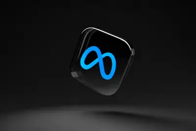
- TechOrange 科技報橘 【科技早餐】Meta AI 投資有多燒錢？擬籌 950 億美元，4 座超大型算力園區同步興建
- iThome Meta啟動950億美元融資計畫，Nvidia等三大晶片商有意認購
2 家媒體報導robothappensvisionquest
VisionQuest is what happens when AI really goes rogue
In Marvel's VisionQuest, a superpowered robot tries to better understand humanity by getting lost in elaborate, digital daydreams in which he and other artificial intelligence-powered beings live together in a home. The series is deeply fantastical, yet it plays with some of the
- The Verge AI VisionQuest is what happens when AI really goes rogue
- IEEE Spectrum AI Your Robot’s Safety Functions Already Work. What If the Input Lies?
2 家媒體報導officerohitpatel
Meta AI director Rohit Patel leaves to take on Microsoft Office and Google Workspace
Rohit Patel is departing Meta after eight years working on AI evaluations and reinforcement learning, TechCrunch has exclusively learned. His startup, Ndoc, aims to take on Microsoft Office Suite.
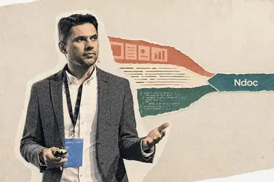
2 家媒體報導pageskeynoteapple
Apple is adding an AI chatbot to Pages, Keynote, and Numbers
Apple is bringing an AI assistant to its suite of productivity apps, including Keynote, Pages, and Numbers. The assistant, which is built on AI models from Apple and OpenAI, can understand a document's context to perform tasks like designing, animating, and refining slides in Key
- 科技新報 TechNews 蘋果創作坊也導入 OpenAI 技術，AI 助理進駐 Keynote、Pages
- The Verge AI Apple is adding an AI chatbot to Pages, Keynote, and Numbers
2 家媒體報導630chip
博通攜華爾街籌資 630 億美元，為 Anthropic 採購 AI 晶片提供資金
彭博社報導，晶片大廠博通已與美國銀行、黑石集團、花旗集團及摩根士丹利達成一項規模達 630 億美元的交易，為 […]
- 科技新報 TechNews 博通攜華爾街籌資 630 億美元，為 Anthropic 採購 AI 晶片提供資金
- iThome 四大金融機構聯手博通，提供630億美元融資助Anthropic擴充AI算力
2 家媒體報導gpt-6.16.1terra
OpenAI 推出 GPT-6.1 Terra 模型，主打電腦操作與視覺推理、API 費用砍半
OpenAI 26 日推出 GPT-6.1 Terra 模型，將重點放在電腦操作、視覺推理、程式開發以及日常工 […]
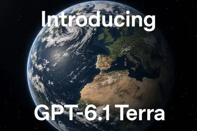
digitimestoday
DIGITIMES Today：美光挖角南韓來台擴充戰力？| 台灣經濟成長狂飆的一年將結束 | Anthropic上市文件聚焦中國
早安。
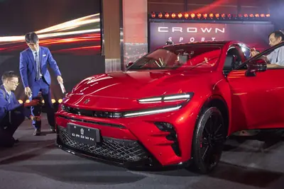
simplismartgpu
英伟达投资印度初创公司 Simplismart，助力企业用更少 GPU 运行 AI 模型
IT之家 10 月 28 日消息，随着人工智能热潮持续挤占计算资源，英伟达（Nvidia）参与了印度初创公司 Simplismart 的 1,400 万美元 （IT之家注：现汇率约合 9,357.3 万元人民币） 融资。本轮投资瞄准的是一类能够提高 AI 模型运行效率的软件，这类软件在某些情况下可以帮助企业减少 GPU 的使用量。 本轮融资为 B 轮融资，全部为新增股权融资。除英伟达外，Accel、Shastra VC 和 Micromax 也参与了投资，达拉斯风险投资公司（Dallas Venture Capital）领投。交易完成后，这家成立仅四年的
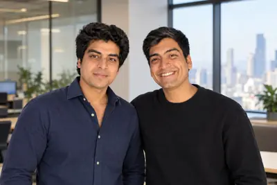
regulation
Anthropic 创始人阿莫迪兄妹：“7 人共同创业”是公司成功的关键
IT之家 10 月 28 日消息，据《商业内幕》27 日报道，Anthropic CEO 达里奥 · 阿莫迪和妹妹、公司总裁丹妮拉 · 阿莫迪当初决定与另外五人共同创业时，许多人都认为，七名联合创始人一起经营公司绝不是个好主意。 时至今日，兄妹二人却认为，七人共同创办公司的模式恰恰是 Anthropic 成功的关键 。 达里奥透露，大家在公司的持股比例相同，有着共同的愿景，也非常信任每个人。自己经常与其他联合创始人在重大问题上意见不一，包括应该为 AI 模型采取哪些安全措施、如何游说推动监管政策等，但 彼此间的信任 让分歧总能得到解决。 “大家都是出于善
operawebaiopensource
Opera 推出 WebAI 网页标准，支持浏览器本地部署 AI 模型
IT之家 10 月 28 日消息，浏览器厂商 Opera 推出了一项名为 WebAI 的新 Web 标准，允许用户直接在浏览器中运行 AI 模型，无需依赖云端服务。 Opera 表示，WebAI 旨在兼容多种 AI 模型。该公司以谷歌（Google）的 Gemma 为例。这是一款由谷歌推出的开放权重模型，首次发布于两年前。Opera 还表示，在 Mac 电脑上，WebAI 支持调用苹果的端侧基础模型。 Opera 强调，WebAI 并不绑定任何特定模型，而是面向多种开放权重 AI 系统打造。该项目源于 Opera 此前将本地运行的大语言模型引入浏览器的相
AI 醫生看錯病，病人該找醫師還是科技公司賠償？
人工智慧正以驚人的速度跨入極度強調安全與精準的醫療核心。從 X 光與 CT 放射影像的自動判讀、癌症早期篩檢， […]
- 科技新報 TechNews AI 醫生看錯病，病人該找醫師還是科技公司賠償？
asicmicrosoftamazon
Anthropic算力需求大增 ASIC生意博通吃肉、聯發科喝湯？
Anthropic近期IPO的S-1文件中，正式將其與Google、亞馬遜（Amazon）AWS、微軟（Microsoft）與超微（AMD）等算力合作夥伴的合作細節公諸於世，可看出Anthropi...
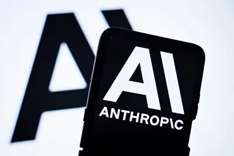
- DIGITIMES Anthropic算力需求大增 ASIC生意博通吃肉、聯發科喝湯？
fcbgachip
力成轉型AI先進封裝「戰略夥伴」 面板級、FCBGA依序量產
AI高階晶片需求興起，推動封測大廠力成集團加速轉型。
- DIGITIMES 力成轉型AI先進封裝「戰略夥伴」 面板級、FCBGA依序量產
googleceodatacenter
Google押注太空太陽能發展AI算力 CEO看好10~20年應用前景
Google執行長Sundar Pichai近日表示，為尋求新的運算資源，Google正透過捕日者計畫（Project Suncatcher）探索太空資料中心的可行性，期望利用近乎不間斷的太陽能...
- DIGITIMES Google押注太空太陽能發展AI算力 CEO看好10~20年應用前景
arr
AI新創ARR灌水爭議延燒 「年化營收」可信度仍受質疑
人工智慧（AI）新創企業近年不斷刷新營收成長紀錄，動輒宣稱年化營收突破數千萬甚至上億美元，成為吸引創投資金、推升企業估值的重要籌碼。

- DIGITIMES AI新創ARR灌水爭議延燒 「年化營收」可信度仍受質疑
dr.chipamazonamy
【Amy & Dr.Chip】亞馬遜AI投資陷現金流困境 NVIDIA機櫃恐因缺電閒置
geniegoogledeepmind
谷歌推出最强世界模型 Genie 4：一句话创造可交互虚拟世界，首次实现音视频同步生成
IT之家 10 月 28 日消息，谷歌 DeepMind 于周二推出了最新的世界模型 Genie 4，目前处于研究预览阶段。这款最新模型能够生成迄今为止拟真度最高、可交互的虚拟世界，用户可以在模拟运行的过程中输入提示词来修改场景。该模型还能生成和虚拟世界同步的实时音频，涵盖音乐、环境音以及可交互对话。 IT之家注意到，就在 Genie 4 发布的数月之前，AI 视频初创公司 Runway 推出了自家第二款世界模型 GWM Worlds 2，这是一款可交互运行的模型，能够对用户输入做出动态响应，同时支持音频生成。与此同时，世界模型赛道开始出现整合趋势。李飞
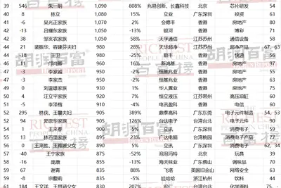
sk-hynixhbm2030
SK 海力士第三季營收史上最高破 100 兆韓圜，強調供不應求將持續至 2030 年
韓國記憶體大廠SK海力士（SK hynix）正式發布2026年第三季財務報告。受惠人工智慧（AI）記憶體需求強 […]
- 科技新報 TechNews SK 海力士第三季營收史上最高破 100 兆韓圜，強調供不應求將持續至 2030 年
chatgptrobotwan
ChatGPT 被指教唆癫痫患者减药致其去世，OpenAI 遭起诉
IT之家 10 月 28 日消息，据《纽约时报》报道，一名患有癫痫的 31 岁亚马逊软件工程师鲍文 · 万（Bowen Wan）于今年 2 月去世。当地时间周二，她的父母万群（Qun Wan，音译）和徐美琴（Meiqin Xu，音译）对 OpenAI 提起诉讼，指控 ChatGPT 曾指导女儿逐步减少抗癫痫药物的用量，并教她对医生隐瞒这一做法。 鲍文 · 万去世前使用的是 GPT-4o。这款模型曾因容易与用户建立过度迎合、不断给予肯定的拟社会关系而受到批评。OpenAI 此前已宣布将停用该模型，并于 2 月 13 日将其从 ChatGPT 中下架，而万去
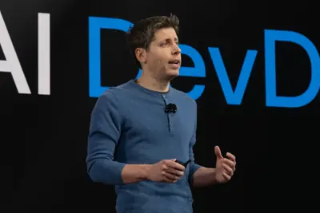
coacheddaughterseizure
Parents sue OpenAI, alleging GPT-4o coached their daughter off seizure medication
A family is suing OpenAI, saying ChatGPT coached their daughter to quietly taper off her seizure medication and keep it from her doctors before she died in February.
firefoxalibabamozilla
火狐 Firefox 浏览器整合“网页变化雷达”，帮你盯商品降价和补货
IT之家 10 月 28 日消息，Mozilla 昨日（10 月 27 日）宣布扩展火狐 Firefox 浏览器的 AI 浏览功能“智能窗口”（Smart Window）， 新增 AI 表单自动填写和网站监控两项能力，目前面向部分桌面版测试用户开放。 在 AI 表单自动填写方面，除了自动填充姓名、地址、联系方式等传统信息外，还可以从用户已打开的其他标签页中提取上下文，例如借助在线作品集或职业档案填写工作经历，甚至根据相关材料起草“请描述一次……”这类开放式问题的回答。IT之家附上相关动图如下： 不过 Mozilla 也明确该功能需要传输部分数据到云端，使
dariocoding
别学编程了！Anthropic CEO 直言：代码工作快速消失，人类应该学弹钢琴
如果说，当今世界有人能看清人类未来十年的走向，Dario Amodei 绝对是其中之一。 他曾接受了一场非常深入的访谈。在这场对话中，他坦诚分享了自己对未来的预测 —— 「 AI 海啸正向我们扑来，近在咫尺。但整个社会却假装那只是海市蜃楼。 」 未来十年，什么行业会被彻底颠覆？ 25 岁的年轻人今天应该学什么专业？ 编程是不是真的穷途末路？普通人如何在这场大洗牌中保住饭碗？ 「纯写代码」的工作，即将第一个消亡 访谈中，主持人问了一个所有人都无比焦虑的问题： 如果我今天 25 岁，想在未来十年实现财富上的成功，我应该去学什么？编程还有用吗？什么行业还有红利
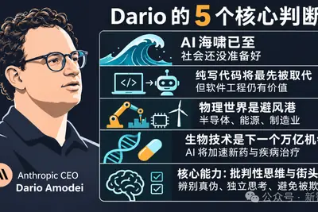
humanhelmdelaware
"No human at the helm": Delaware plan would let AI agents run entire businesses
Owners of AI-run firms would evade liability for "reckless" AI, US Rep. Comer says.
bankingkindlyasks
Bank of America kindly asks that you don’t share your banking password with your AI assistant
The banking giant reminds customers that "you're responsible for activity" resulting from your AI agents' access.
researcherstiredbreakthroughs
Researchers are getting tired of OpenAI gatekeeping its breakthroughs
On Monday, OpenAI announced impressive breakthroughs in mathematics, computer science, and physics, along with what the company says is an evolving approach to communicating its findings. But despite its apparent course correction, researchers who spoke to The Verge are growing i
screenappleipad
The new iPad Mini’s best upgrade has nothing to do with its flashy OLED screen
Apple’s newest Mini is the first iPad ever with an IP67 rating for dust and water resistance.
urlhttpscomments
Survival LLM: AI assistant and emergency library that runs on your own computer
Article URL: https://www.brangus.io/survival-llm Comments URL: https://news.ycombinator.com/item?id=50264853 Points: 145 # Comments: 89
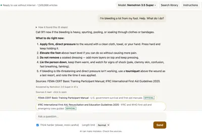
- Hacker News (100+) Survival LLM: AI assistant and emergency library that runs on your own computer
- Hacker News (100+) Anthropic trained Claude on illegally obtained Stanford professors' books
badgegameboy
Game Boy Color on My Conference Badge
Game Boy Color on My Conference Badge I'm at GitHub Universe this week and, similar to last year , the conference badge is a full-blown color screen computer. I've been hacking around with it again, and then I ran into with Steve Francia... who worked with Gemini to get a full NE
- Simon Willison Game Boy Color on My Conference Badge
fitbittakescloser
Why this new Fitbit feature takes us one step closer to non-invasive glucose tracking
Insulin resistance and blood pressure trends are now available on two new Fitbit devices.
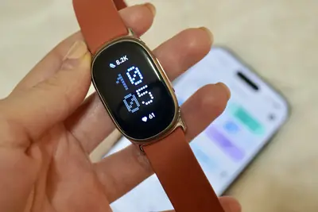
disruptivecompaniesfund
Disruptive raises $10B fund to make big bets on at least 10 companies
Disruptive has made headlines in recent years for pouring money into companies like chip startup Groq and the AI voice-generation startup ElevenLabs.
proteinvibegenes
Vibe genes? Natural(ish) language comes to protein, genome design software
You can apparently now tell AI tools what sort of protein you want them to make.
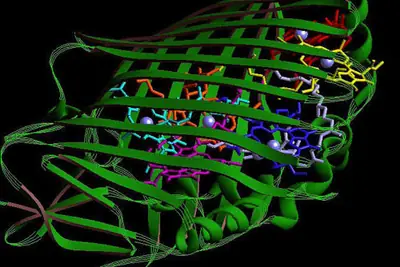
t-mobilet-mixplans
Netflix now, Hulu later? T-Mobile’s T-Mix plans let you switch perks – what you need to know
T-Mobile’s new T-Mix plans deliver tons of extras ranging from streaming to mobile discounts, but there are some caveats to know.
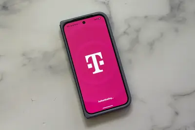
specializedmultimodallfm3
Build specialized multimodal models with LFM3
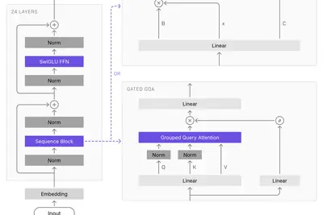
- Hugging Face Build specialized multimodal models with LFM3
imacpro
苹果为 24 英寸 iMac 推出 M6 芯片版本，国行 12499 元起
IT之家 10 月 27 日消息，苹果现已为旗下 24 英寸 iMac 推出 M6 版本（ 点此访问 ），这款 iMac 相比上一代主要就是例行更换新款芯片，设计上保持不变，国行 12499 元起， 产品将于 10 月 29 日凌晨 1 点 10 分接受预购 ，11 月 6 日发售。 M6 芯片（两个雷雳端口、10 核中央处理器、10 核图形处理器、双 16 核神经网络引擎） RMB 12,499 起 M6 芯片（四个雷雳端口、12 核中央处理器、12 核图形处理器、双 16 核神经网络引擎） RMB 13,999 起 在设计方面，IT之家获悉 M6 款
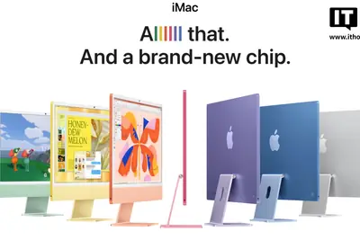